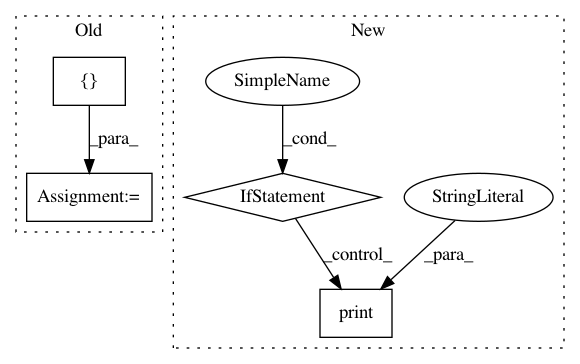

01bf5dd323bebd66b7ad60fdaee34eb8f7b76aae,lib/streamlit/proxy/Proxy.py,,_print_remote_url,#Any#Any#,50
Before Change
// config.set_option("proxy.isRemote", val)
def _print_remote_url(port, quoted_name):
ips = []
http_client = None
try:
http_client = httpclient.HTTPClient()
for key in ("local-ipv4", "public-ipv4"):
After Change
def _print_remote_url(port, quoted_name):
external_ip = config.get_option("proxy.externalIP")
if external_ip:
LOGGER.debug(f"proxy.externalIP set to {external_ip}")
else:
print("proxy.externalIP not set, attempting autodetect of external IP")
http_client = None
try:
http_client = httpclient.HTTPClient()
response = http_client.fetch(AWS_CHECK_IP, request_timeout=1)
external_ip = response.body.strip()
except (httpclient.HTTPError, RuntimeError) as e:
LOGGER.error(f"Error connecting to {AWS_CHECK_IP}: {e}")
finally:
if http_client is not None:
http_client.close()
if external_ip is None:
print("Did not auto detect external ip. Please go to "
f"{REMOTE_DOC} for debugging hints.")
return
In pattern: SUPERPATTERN
Frequency: 3
Non-data size: 4
Instances
Project Name: streamlit/streamlit
Commit Name: 01bf5dd323bebd66b7ad60fdaee34eb8f7b76aae
Time: 2018-08-09
Author: armando@playground.global
File Name: lib/streamlit/proxy/Proxy.py
Class Name:
Method Name: _print_remote_url
Project Name: AlexEMG/DeepLabCut
Commit Name: 9ba5cdb985b40092d44c81d830ac1a3e484a23eb
Time: 2019-10-19
Author: amathis@fas.harvard.edu
File Name: deeplabcut/pose_estimation_tensorflow/predict_videos.py
Class Name:
Method Name: analyze_videos
Project Name: streamlit/streamlit
Commit Name: 883644354ca6c016a9b79d67e0494db88a823c23
Time: 2018-08-14
Author: armando@playground.global
File Name: lib/streamlit/proxy/Proxy.py
Class Name:
Method Name: _print_remote_url